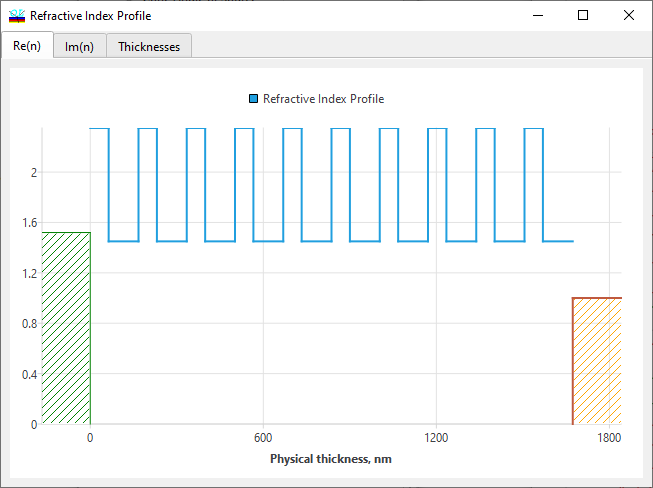
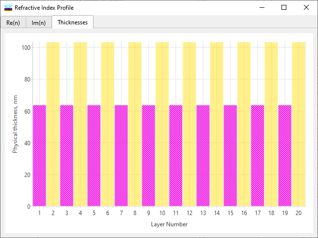

Refractive Index Profile Evaluation
Refractive Index Profile Evaluation
Navigation: OptiLayer Menu Commands > Analysis Menu >
Refractive Index Profile Evaluation
` <idh_admittance_evaluation.html>`__ ` <idh_menu_analysis.html>`__ ` <zeroes_and_poles.html>`__
The Refractive Index Profile Evaluation is one of the Analysis tools initiated by selecting the Index Profile command from the Analysis menu. It allows plotting of the refractive index profile for the design currently loaded into memory.

The extinction coefficient profile can also be plotted using the Im(n) tab of this dialog. An alternative form of refractive index profile representation is the bar diagram form, where the thicknesses of each layer material are represented as bars of different colors. For example, below we represent the structure of a dispersive mirror for the generation of femtosecond pulses.
